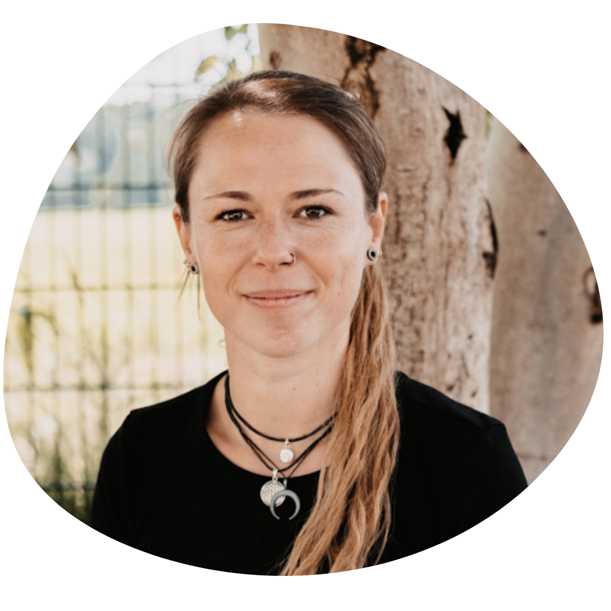

Nadine Lehmann
Erzieherin · Entspannungspädagogin · Integrationsfachkraft
Nadine ist gelernte Erzieherin und leitet seit 2007 eine Kinderkrippe mit vier Gruppen. Sie hat sich als Entspannungspädagogin, Fachwirtin für Erziehungswesen sowie als Fachkraft für Integrationspädagogik weitergebildet. Seit 2020 bildet sie sich als psychologische Beraterin und Lerncoach weiter.
Nadja Peuckert
Bildungswissenschaftlerin · Dozentin · infans-Multiplikatorin
Nadja ist Bildungswissenschaftlerin, studiert Psychologie und ist als Bildungsreferentin und Dozentin tätig. Als gelernte Erzieherin greift sie auf zwölf Jahre praktische Tätigkeit im Ü3- und U3-Bereich zurück. Sie ist Multiplikatorin des infans-Konzeptes der Frühpädagogik.

Belinda Papajewski
Kinderkrankenpflegerin · Traumapädagogin · Kinderyogalehrerin
Belinda ist seit 11 Jahren in Kitas tätig und legt den Schwerpunkt auf die intensive Begleitung von Kindern mit erhöhtem Förderbedarf und herausforderndem Verhalten. Sie lässt traumapädagogische Ansätze in die Beziehungs- und Umgebungsgestaltung einfließen. Seit 2016 unterrichtet sie Familien- und Kinderyoga mit dem Schwerpunkt Selbstfürsorge, seit 2021 gibt sie Fort- und Weiterbildungen für pädagogische Fachkräfte.
Daniela Faller
Erzieherin · Referentin · Dozentin
Daniela ist ausgebildete Erzieherin mit zwölf Jahren Berufserfahrung als pädagogische Fachkraft und Führungskraft. Seit sechs Jahren ist sie Referentin beim Landkreis Waldshut für Elterngesprächsabende und Vorträge. Sie verbindet neueste wissenschaftliche Theorien mit pädagogischem Professionswissen und Praxiserfahrung.
Sarah Weber
Sonderpädagogin (M. Ed.) · UK-Fachkraft · ADHS-Beraterin
Sarah arbeitet seit über sieben Jahren therapeutisch, begleitend und beratend mit Kindern im Autismus-Spektrum und deren Umfeld. Autismus, ADHS und Neurodivergenz sind ihre absoluten Herzensthemen. Ihr ist es wichtig, eigene Erfahrungen, eine humanistische Haltung und fachliche Expertise wirkungsvoll zu verknüpfen.
Lena Weisz
Erzieherin · Yogalehrerin · Sprachförderung
Lena ist erfahrene Erzieherin mit Schwerpunkt Sprachförderung, Yogalehrerin für Kinder und Erwachsene sowie Leiterin von Babyfeeling- und Eltern-Kind-Kursen. Sie hat einige Jahre in Spanien gearbeitet und Kinder mit Deutsch als Fremdsprache unterrichtet. In ihren Kinderyoga-Fortbildungen zeigt sie, wie Yogaelemente einfach in den Kita-Alltag integriert werden können.
Melanie Schroeder
Psychologische Beraterin · Heilpraktikerin für Psychotherapie
Melanie ist psychologische Beraterin mit dem Schwerpunkt ADHS im Kindes-, Jugend- und Erwachsenenalter. Sie bringt langjährige Erfahrung in der Schulbegleitung und Teamleitung mit. In ihren Fortbildungen verbindet sie psychologisches Fachwissen mit alltagsnaher Praxis und schafft vertrauensvolle Lernräume.
Silke Geschwenter-Westmeier
Heilpädagogin · Marte Meo Supervisorin · Kinderschutzfachkraft
Seit über 25 Jahren begleitet Silke mit viel Herz und Fachkompetenz Kinder, Jugendliche, Familien und pädagogische Fachkräfte. Mehr als 85 pädagogische Fachkräfte hat sie bereits auf ihrem Qualifizierungsweg begleitet. Ihre Stärke: ressourcenorientierte Begleitung und eine warmherzige, praxisnahe Lernatmosphäre.
Isabelle Trittel
Erziehungswissenschaftlerin · Musikpädagogin · Systemische Beraterin
Isabelle hat Zusatzqualifikationen in Musiktherapie, Autismustherapie und ADHS-Beratung. Nach Jahren in der Autismustherapie hat sie ihren Schwerpunkt auf ADHS, Autismus, AuDHD und hochsensible Verarbeitungsmuster gelegt. Als selbst neurodivergente Person ist ihr eine neurodivergenzfreundliche und ressourcenorientierte Haltung besonders wichtig.